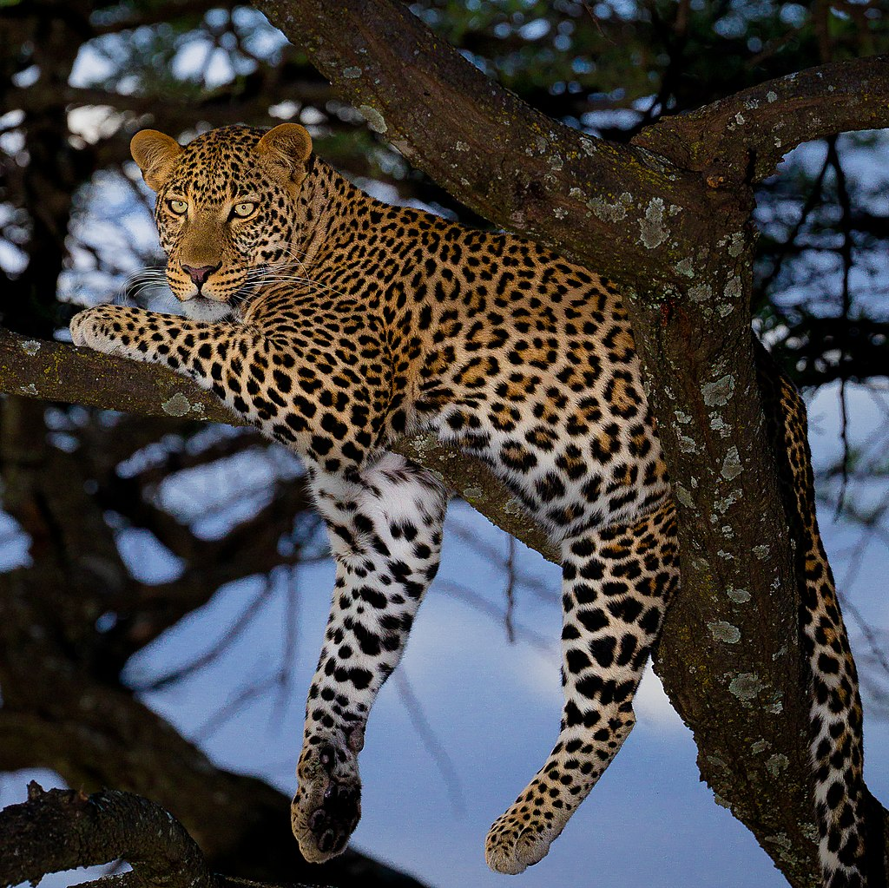
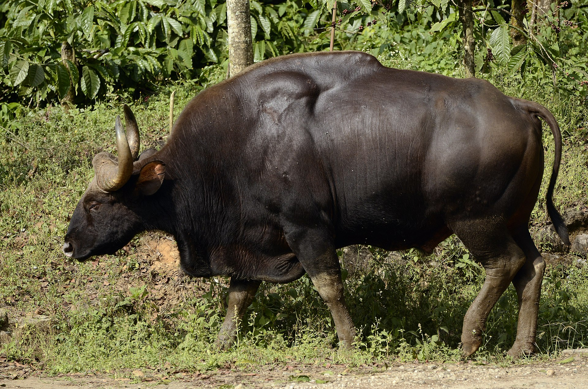
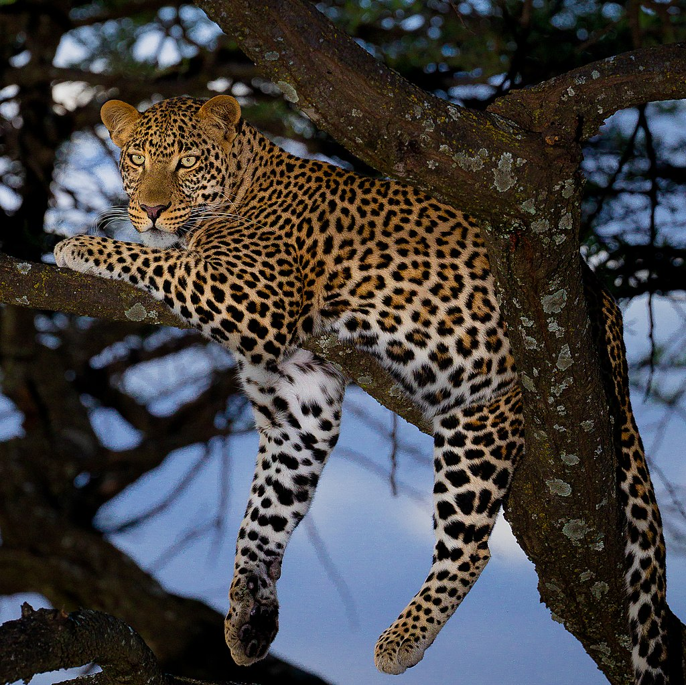
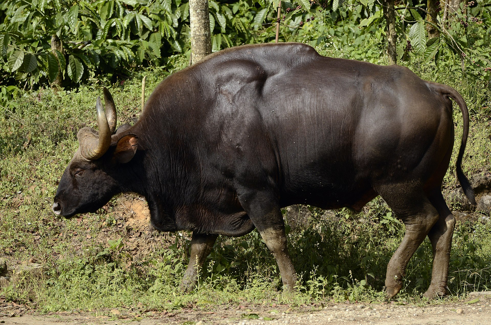

General Information
Simlipal is a tiger reserve in the Mayurbhanj district in the Indian state of Odisha covering 2,750 km2 (1,060 sq mi). It is part of the Mayurbhanj Elephant Reserve, which includes three protected areas—Similipal Tiger Reserve, Hadgarh Wildlife Sanctuary with 191.06 km2 (73.77 sq mi) and Kuldiha Wildlife Sanctuary with 272.75 km2 (105.31 sq mi). Simlipal National Park derives its name from the abundance of red silk cotton trees growing in the area.
The park is home to Bengal tiger, Asian elephant, gaur, and chausingha.
This protected area is part of the UNESCO World Network of Biosphere Reserves since 2009.
History
Simlipal elephant reserve originated mainly as a hunting ground for the royalty. It was formally designated a tiger reserve in 1956 and under Project Tiger in May 1973. "Mugger Crocodile Scheme" was started in 1979 at Ramatirtha, Jashipur.
The Government of Odisha declared Simlipal as a wildlife sanctuary in 1979 with an area of 2,200 square kilometres (850 sq mi). Later in 1980, the state government proposed 303 square kilometres (117 sq mi) of the sanctuary as a national park. Further in 1986, area of the national park was increased to 845.70 square kilometres (326.53 sq mi). Government of India declared Simlipal as a biosphere reserve in 1994. UNESCO added this national park to its list of Biosphere Reserves in May 2009. There are 10,000 people living in 61 villages in the forest. That is why Simlipal is yet to be declared a full-fledged park, despite its having the status of one of the 18 biospheres of India.
Geography and Climate
The tiger reserve is in the Mayurbhanj district in the Indian state of Odisha. Simlipal Elephant Reserve is an ecosystem complete with forest vegetation (mainly sal trees), fauna and the adjoining Ho / Santhal tribal settlements.
The high hills surround Meghasani/Tunkiburu, the highest peak in the park. At an altitude of 1,165 metres (3,822 ft), followed by Khairiburu at above 1,000 metres (3,300 ft) elevation .At least 12 rivers cut across the plain area. The prominent among them are Budhabalanga, Palpala Bhandan, Kharkai River and Deo. This sprawling forest has two prominent waterfalls - Joranda/Jorodah 181 metres (594 ft) and Barheipani/Barhai 217 metres (712 ft)
Summers are hot with temperatures around 40 °C (104 °F) whereas the winter months can be as low as 14 °C (57 °F). The rainfall ranges from moderate to heavy.
Simlipal comes under a high cerebral malaria-prone zone. In cerebral malaria the sequestrated red blood cells can breach the blood brain barrier possibly leading to coma. Cerebral malaria, if not detected, causes death. Initial symptoms of cerebral malaria are often mistaken as those of acute jaundice. There have been many recorded cases of death due to cerebral malaria after visits to Simlipal. Therefore, it is extremely important for tourists to be aware of the threats posed by cerebral malaria before planning a visit to Simlipal.[citation needed]
In 2021, large fires broke out in the Simlipal Tiger Reserve, and continued to burn for over two weeks before they were brought under control. The 2021 Simlipal forest fires resulted in widespread environmental damage, and caused an exodus of fauna from the park into nearby human habitations.
Flora
The park is a treasure house of 1,076 species of plants belonging to 102 families. 96 species of orchids have been identified here. It lies in the Eastern Highlands moist deciduous forests ecoregion, with tropical moist broadleaf forest and tropical moist deciduous forests with dry deciduous hill forest and high level Sal forests. The grasslands and the savannas provide grazing grounds for the herbivores and hiding places to the carnivores. The forest boasts of innumerable medicinal and aromatic plants, which provide a source of earnings for the tribal people. Eucalyptus, planted by the British during the 1900s, are also found
Fauna
A total of 42 species of mammals, 242 species of birds and 30 species of reptiles have been recorded in Simlipal National Park.231 species of birds nest in these forests.The park has a sizeable population of reptiles, which includes snakes and turtles. The "Mugger Crocodile Management Programme" has helped the Mugger crocodile (Crocodylus palustris) to survive and flourish in and on the banks of Khairi river.
Vegetation ecology of the Similipal biosphere reserve
Vegetation analysis of the forest ecosystem of Similipal Biosphere Reserve (SBR) was carried out at 10 sites to study changes in structure and composition in plant community distributed in the core (undisturbed) and buffer (disturbed) areas of the reserve. The study reveals a higher number of herbs and shrubs and a lower number of trees in the buffer area indicating greater anthropogenic disturbance. Total tree basal area varied from 48.7 to 78.61 m 2 ha -1 in the buffer area and 81.4 to 104.9 m 2 ha -1 in the core area. The density of saplings and seedlings was nearly equal both at the disturbed and undisturbed sites. However, the rate of conversion of saplings to trees was greater at undisturbed sites. The lower rate of conversion at disturbed sites is due to the removal of seedlings of most of the tree species. The high herb diversity (2.14 - 3.50) and low tree diversity (2.14 - 2.98) in buffer area is a result of Environmental openings providing greater opportunity for the recruitment of herbs and shrubs. The presence of only a few individuals of major tree species in larger diameter classes and more in young diameter classes in buffer areas indicate that the plant community was subjected to disturbance and are in the regenerating stage. Greater fluctuation in the species / genus ratio in the herbaceous species at sites of the buffer area in comparison to core area has led to variation in developmental status of plant communities among the core and buffer areas of the reserve. However, the presence of the seedlings of dominant tree species in the buffer area may help in the restoration of the plant communities in the long-run, provided protection means are strengthened and biotic stress reduced.
 


